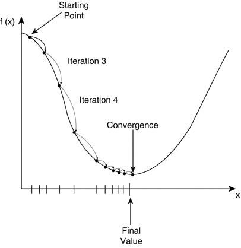

Chapter 4: Training a neural network with backpropagation
There is no way for us to “solve for W and V” in closed form. Recall from calculus that the typical way to do this is to find the derivative and set it to 0. We have to instead “optimize” our objective function using a method called gradient descent.
What is the objective function we’ll use?
J = -sum_from_n=1..N ( sum_from_k=1..K ( T[n,k] * logY[n,k] ) )
You’ll notice that this is just the negative log-likelihood. (Think about how you would calculate the likelihood of the faces of a die given a dataset of die rolls, and you should get a result in a similar form).
And if you turned your label/target variables (now called T) into an indicator matrix like I mentioned, it should now be, well, a matrix, thus having 2 indices, n and k, as above.
In Numpy this could be calculated as follows:
def cost(T, Y):
return -(T*np.log(Y)).sum()
So now that we have an objective function, how do we optimize it? We use a method called “gradient descent”, where we “travel” along the gradient of J with respect to W and V, until we hit a minimum.
In a picture, gradient descent looks like this.
 
Convince yourself that by going along the direction of the gradient, we will always end up at a “lower” J than where we started.
In general, knowing how to compute the gradient is not necessary unless you want to know how to code a neural network yourself in Numpy, which we do in my course at https://udemy.com/data-science-deep-learning-in-python. In this book, since we are focusing on Theano and TensorFlow, we will not do this.
Once you find the gradient, you want to take small steps in that direction.
You can imagine that if your steps are too large, you’ll just end up on the “other side” of the canyon, bouncing back and forth!
Thus we do our weight updates like so:
weight = weight - learning_rate * gradient_of_J_wrt_weight
Where the learning rate is a very small number, i.e. 0.00001. (Note: if the number is too small, gradient descent will take a very long time. I show you how to optimize this value in my Udemy course).
That is all there is to it!
If you want to convince yourself that this works, I would recommend trying to optimize a function you already know how to solve, such as a quadratic.
For example, your objective would be J = x**2 + x, and the gradient of J is 2x + 1, so the minimum can be found at -1/2.
Exercise
Use gradient descent to optimize the following functions:
maximize J = log(x) + log(1-x), 0 < x < 1
maximize J = sin(x), 0 < x < pi
minimize J = 1 - x^2 - y^2, 0 <= x <= 1, 0 <= y <= 1, x + y = 1
More Code
Before we start looking at Theano and TensorFlow, I want you to get a neural network set up with just pure Numpy and Python. Assuming you’ve went through the previous chapters, you should already have code to load the data and feed the data into the neural network in the forward direction.
# … load data into X, T…
# … initialize W1 and W2
def forward(X, W1, W2):
Z = sigmoid(X.dot(W1))
Y = softmax(Z.dot(W2))
return Y, Z
def grad_W2(Z, T, Y):
return Z.T.dot(Y - T)
def grad_W1(X, Z, T, Y, W2):
return X.T.dot(((Y - T).dot(W2.T) * (Z*(1 - Z))))
for i in xrange(epochs):
Y, Z = forward(X, W1, W2)
W2 -= learning_rate * grad_W2(Z, T, Y)
W1 -= learning_rate * grad_W1(X, Z, T, Y, W2)
print cost(T, Y)
And watch the cost magically decrease on every iteration of the loop! Some notes about this code:
I have renamed the target variables T and the output of the neural network Y. In the previous chapter I called the targets Y and the output of the neural network p_y_given_x.
Notice we return both Z (the hidden layer values) as well as Y in the forward() function. That’s because we need both to calculate the gradient.
Don’t worry about how I calculated the gradient functions, unless you know enough calculus to derive them yourself and then implement them in code.
So what exactly is backpropagation? It just means the “error” is getting propagated backward through the neural network. Notice how “Y - T” shows up in both gradients. If you had more than 1 hidden layer in the neural network, you would notice more patterns emerge.
Notice that we loop through a number of “epochs”, calculating the error on the entire dataset at the same time. Refer back to chapter 2, when I talked about repetition in biological analogies. We are just repeatedly showing the neural network the same samples again and again.
Exercise
Use the above code on the MNIST dataset, or whatever dataset you chose to download. Add the bias terms, or add a column of 1s to the matrix X and Z so that you effectively have bias terms.
In addition to printing the cost, also print the classification rate or error rate. Does a lower cost guarantee a lower error rate?